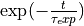
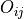
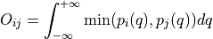

Tools – thermolib.tools
- thermolib.tools.blav(data: ndarray, blocksizes=None, fitrange: list = [1, inf], model_function=None, plot: bool = False, fn_plot: str = None, plot_ylims: list = None, unit: str = 'au', **blav_kwargs)[source]
Wrapper routine around _blav to apply block averaging and estimate the correlated error bar as well as the corresponding integrated correlation time on the average of the given data series. For more details on the procedure as well as the meaning of the arguments data, blocksizes, fitrange, and model_function, see documentation of the routine
_wrap.- Parameters:
plot (bool, optional, default=False) – If True, a plot of the samples and error estimates will be generated. Ignored if fn_plot is not None. Defaults to False.
fn_plot (str or None, optional, default=None) – file name to which to write the plot. If None is given, either no plot is made (if plot=False) or the plot is not saved (if plot=True)
plot_ylims (list or None, optional, default=None) – Limits for the y-axis in the error plot.
unit (str, optional, default='au') – unit in which to plot the data
- Returns:
mean (float)- the sample mean.
error (float) - the error on the sample mean.
corrtime (float) - the correlation time (in units of the timestep) of the original sample data.
- thermolib.tools.corrtime_from_acf(data: ndarray, nblocks=None, norm: bool = True, plot: bool = False, fn_plot=None, xlims=None, ylims: list = [-0.25, 1.05], n_nested_envelopes=1, legend=True, **curve_fit_kwargs)[source]
Routine to compute the integrated autocorrelation time as follows:
Compute the autocorrelation function (possibly after blocking data for noise suppression) using the routine
_acf.Optionally extract the upper envelope of the autocorrelation function to eliminate short time oscillations (when n_nested_envelopes>1).
Fit a single decaying exponential function of the form  to the acf (or its upper envelope) to extract the exponential correlation time.
Translate the exponential correlation time to the integrated correlation time as:
 .
.
- Parameters:
data (np.ndarray) – 1D array representing the time series for which the correlation time needs to be computed
nblocks (int or None, optional, default=None) – If not None, the data will be blocked (in a number of blocks given to nblocks) prior to constructing the acf. This is usefull for surpressing noise.
norm (bool, optional, default=True) – If True, normalize the autocorrelation function such that acf(0)=1
plot (bool, optional, default=False) – If True, generate a plot of the acf and resulting fit. This parameter is ignored if fn_plot is not None.
fn_plot (str or None, optional, default=None) – If not None, a plot will be made of the acf and resulting fit and stored to a file with the given file name
xlims (list or None, optional, default=None) – Limits for the x-axis in the plot.
ylims (list, optional, default=[-0.25, 1.05]) – Limits for the y-axis in the plot.
- Returns:
The integrated autocorrelation time
- Return type:
float
- thermolib.tools.decorrelate(trajectories: list, method: str = 'acf', decorrelate_only=None, plot: bool = False, fn_plot=None, verbose: bool = False, return_decorrelated_trajectories: bool = False, **method_kwargs)[source]
Function to compute correlation times for a list of trajectories and optionally decorrelate the trajectories by averaging over a number of samples equal to the correlation time.
- Parameters:
trajectories (list) – List of trajectories to be decorrelated.
method (str, optional, default='acf') – Method to compute correlation time, either ‘acf’ for fit to autocorrelation function or ‘blav’ for block averaging. Keyword arguments specific to the chosen method can be parsed to that method by specifyinng them at the end of the argument list. For example
decorrelate(traj, method='acf', plot=True, n_nested_enveloppes=2, p0=[1000])will correctly parse then_nested_enveloppesandp0parameters to thecorrtime_from_acfroutine.decorrelate_only (int or None, optional, default=None) – Index of the collective variable (CV) to be used for decorrelation when multiple CVs are present in the trajectories. If set to None, all CVs will be decorrelated simultaneously which generally leads to higher correlation times.
plot (bool, optional, default=False) – If True, generate a plot showing the correlation times for each trajectory and collective variable. Ignored if fn_plot is not None.
fn_plot (str or None, optional) – File name to which to write the plot, defaults to None which means no plot is made (if plot=False) or the plot is not saved (if plot=True).
verbose (bool, optional, default=False) – If True, print additional information during computation.
return_decorrelated_trajectories (bool, optional, default=False) – If True, also return the decorrelated trajectories which have been block averaged with a block size given by the correlation time
- Returns:
correlation time, optionally (if
return_decorrelated_trajectories=True) also the decorrelated trajectories are returned- Return type:
np.ndarray or (if
return_decorrelated_trajectories=True) [np.ndarray, list]
- thermolib.tools.extract_polynomial_bias_info(fn_plumed: str = 'plumed.dat')[source]
Extracts polynomial bias coefficients from a PLUMED input file.
- Parameters:
fn_plumed (str, optional, default='plumed.dat') – The filename of the PLUMED input file.
- Returns:
A list of polynomial coefficients for the bias potential.
- Return type:
list of float
- thermolib.tools.fisher_matrix_mle_probdens(ps: ndarray, method: str = 'mle_f', verbose: bool = False)[source]
Computes the Fisher information matrix for the maximum likelihood estimation (MLE) of probability distribution parameters given in argument ps.
- Parameters:
ps (np.ndarray) – Probability histogram values
method (str, optional, default='mle_f') – Method used for computing the Fisher information matrix. Options include ‘mle_p’, ‘mle_p_cov’, ‘mle_f’, and ‘mle_f_cov’.
verbose (bool, optional, default=False) – If True, prints additional information when no Fisher information is found.
- Returns:
Fisher information matrix computed for the maximum likelihood estimation of probability distribution parameters.
- Return type:
np.ndarray
- thermolib.tools.format_scientific(x, prec=3, latex=True)[source]
Format a numerical value in scientific notation with optional precision and LaTeX formatting.
- Parameters:
x (float) – The numerical value to be formatted in scientific notation.
prec (int) – (optional, default=3) The precision of the scientific notation, i.e., the number of decimal places to be displayed.
latex (bool) – (optional, default=True) If set to
True, the function will return a LaTeX-formatted string; otherwise, it will return a regular string.
- Returns:
A formatted string representing the input value in scientific notation.
- Return type:
str
- thermolib.tools.h5_read_dataset(fn, dset)[source]
Read a dataset from an HDF5 file and return the data as a NumPy array.
- Parameters:
fn (str) – The filename (including the path) of the HDF5 file.
dset (str) – The name of the dataset within the HDF5 file to be read.
- Returns:
A NumPy array containing the data from the specified dataset.
- Return type:
numpy.ndarray
- thermolib.tools.integrate(xs, ys, yerrs=None)[source]
Perform numerical integration of a dataset using the trapezoidal rule and return the integrated value. Optionally, analytically compute the error in the integration if uncertainties (yerrs) are provided (uncorrelated error bars are assumed).
- Parameters:
xs (list or numpy.ndarray) – A list or NumPy array representing the x-values of the dataset.
ys (list or numpy.ndarray) – A list or NumPy array representing the y-values of the dataset.
yerrs (list or numpy.ndarray) – (optional) A list or NumPy array representing the uncertainties in the y-values. If not provided (default), only the integration result is returned.
- Returns:
If yerrs is not provided, the integrated value of the dataset using the trapezoidal rule. If yerrs is provided, a tuple containing the integrated value and the error in the integration.
- Return type:
float or tuple
- thermolib.tools.integrate2d(z, x=None, y=None, dx=1.0, dy=1.0)[source]
Perform numerical integration of a regularly spaced two-dimensional dataset using the midpoint rule and return the integrated value. The function allows the specification of grid spacings (dx and dy) or infers them from the provided coordinate arrays (x and y).
- Parameters:
z (numpy.ndarray) – A two-dimensional array representing the values of the dataset.
x (numpy.ndarray or None) – (optional) The x-coordinate array. If provided, the function will infer the grid spacing dx.
y (numpy.ndarray or None) – (optional) The y-coordinate array. If provided, the function will infer the grid spacing dy.
dx (float) – (optional, default=1.0) The grid spacing in the x-direction. Ignored if x is provided.
dy (float) – (optional, default=1.0) The grid spacing in the y-direction. Ignored if y is provided.
- Returns:
The integrated value of the two-dimensional dataset using the midpoint rule.
- Return type:
float
- thermolib.tools.interpolate_surface_2d(cv1s, cv2s, fs, interpolation_depth=3, verbose=False)[source]
Routine to perform interpolation of F(CV1,CV2) defined by cv1s,cv2,fs grid. For all grid points where fs is np.nan, do interpolation using its right/left/up/down neighbors that are not np.nan. This routine will detect which grid points have fs=np.nan, search for neighbours valid for interpolation, collect there f value and parse to the
interpolate_between_points_2D <thermolib.tools.interpolate_between_points_2D>`()routine to do the actual interpolation.- Parameters:
interpolation_depth (int, optional, default=3) – when interpolating at a certain bin from the neighbouring bins, go at max a number of neighbours far equal to interpolation_depth in each direction to try and find free energy data that is not np.nan
- thermolib.tools.invert_fisher_to_covariance(F: ndarray, ps: ndarray, threshold: float = 0.0, verbose: bool = False)[source]
Inverts the Fisher information matrix to obtain the covariance matrix, handling specified thresholds.
- Parameters:
F (np.ndarray) – Fisher information matrix.
ps (np.ndarray) – Array of probabilities used to apply the threshold.
threshold (float, optional, default=0.0) – Threshold value for removing columns and rows corresponding with a probability lower than the threshold from the Fisher information matrix.
verbose (bool, optional, default=False) – If True, print information about removed columns and rows.
- Returns:
Covariance matrix obtained by inverting the Fisher information matrix.
- Return type:
np.ndarray
- thermolib.tools.multivariate_normal(means: ndarray, covariance: ndarray, size=None)[source]
Wrapper around numpy.random.multivariate_normal to handle np.nan columns in the covariance matrix. It also enforces symmetry on the covariance matrix to filter out non-symmetric noise. To generate the samples, Iit will first try the cholesky method in np.random.multivariate_normal as it is much faster. If that fails, the function tries again with the eigh setting and informs the user.
- Parameters:
means (np.ndarray) – Means of the multivariate normal distribution.
covariance (np.ndarray) – Covariance matrix of the multivariate normal distribution.
size (int, list, np.ndarray or None, optional, default=None) – Number of samples to generate. If None, a single sample is generated
- Returns:
the generated samples from the multivariate normal distribution
- Return type:
np.ndarray
- thermolib.tools.plot_histograms_1d(trajs, bins=200, width=None, cv_unit='au', alpha=0.8)[source]
Routine to plot 1d histograms of all trajectories to check overlap. This is usefull to check the choice of umbrellas in an umbrella simulation.
- Parameters:
trajs (list(np.ndarray)) – List of all trajectories for which the histogram needs to be plotted.
bins (int or np.ndarray, optional, default=200) – Specification of the bins for histograming. Can either be an integer specifying the number of bins over all CV range of all simulations or a numpy array explicitly defining all bins (in atomic units). Either bins or width needs to be specified, but not both.
width (float, optional, default=None) – Specification of the width of the bins to be used in the histogramming (in atomic units). Either bins or width needs to be specified, but not both.
cv_unit (str, optional, default='au') – unit of the CV to be used in the plot
alpha (float, optional, default=0.8) – transparancy value of each histogram to allow visualizing overlap
- thermolib.tools.plot_histograms_overlap_1d(trajs, bins=200, sort=False, fn=None)[source]
Routine to compute and plot overlap between all pairs of given trajectories. The overlap metric used is the one suggested by Borgmans et al. [J. Chem. Theory Comput. 2023, 19, 9032-9048], which expressed overlap  between probability distribution
 and
and  as:
as:
Three plots will be generated:
left – CV mean for each trajectory. This should be monotonically increasing in order to adequately interpret the right pane. If this is not the case, set sort=True
center – matrix of overlap between each pair of trajectories. In a well sorted set, this matrix should be dominant along the diagonal. All diagonal values are 1, as those elements represent overlap of a trajectory with itself.
right – Overlap of each simulation with its right neighbor (as well as right second neighbor). In a good umbrella simulation set, this line should be consistingly high (e.g. above 0.33 as suggested by Borgmans et al. [J. Chem. Theory Comput. 2023, 19, 9032-9048]).
- Parameters:
trajs (list(np.ndarray)) – List of all trajectories for which the histogram needs to be plotted.
bins (int or np.ndarray, optional, default=200) – Specification of the bins in order to construct the probability distributions through histogramming. Can either be an integer specifying the number of bins over all CV range of all simulations or a numpy array explicitly defining all bins.
sort (bool, optional, default=False) – If set to True and it is detected that the trajectories are not sorted according to increasing mean, the routine will first do so. This is crucial in order to properly interpret the ‘overlap with right neighbor’ plot generated by this routine.
fn (str, optional, default=None) – File name to write plot to. Plot will not be saved to file if fn=None
- thermolib.tools.read_wham_input(fn: str, trajectory_readers, trajectory_path_templates, bias_potential: str = 'None', q01_unit: str = 'au', kappa1_unit: str = 'au', q02_unit: str = 'au', kappa2_unit: str = 'au', inverse_cv1: bool = False, inverse_cv2: bool = False, additional_bias=None, additional_bias_dimension: str = 'cv1', skip_bias_names=[], verbose: bool = False)[source]
Read a WHAM input file (metadata file) to read the simulation temperature, trajectories (CV samples) and bias potentials.
- Parameters:
fn (str) –
The path to the WHAM input file, i.e. the metadata file. This file should be in the following format:
T = XXXK NAME_1 Q0_1_1 KAPPA_1_1 [Q0_2_1 KAPPA_2_1 [...]] NAME_2 Q0_1_2 KAPPA_1_2 [Q0_2_2 KAPPA_2_2 [...]] NAME_3 Q0_1_3 KAPPA_1_3 [Q0_2_3 KAPPA_2_3 [...]] ...
where NAME_i is a label for the i-th simulation that will be used to identify the location of its trajectory file (see parameter
trajectory_path_templatesbelow), (Q0_j_i, KAPPA_j_i) is the Q0 and KAPPA value of the j-th CV in the i-th bias potential (.i.e. of the i-th biased simulation). As a first example, a lineW0 0.5 100would indicate a simulation labeled W0 with a bias applied along a single CV (1D bias) centered around CV=0.5 and with force constant 100 (the units of which can be further specified in theq01_unitandkappa1_unitarguments). As a second example, a linesim3 0.5 100 -1.0 150would indicate a simulation labeled sim3 with a bias applied along two CVs (2D bias) centered around (CV1,CV2)=(0.5,-1.0) and with force constant 100 along CV1 and 150 along CV2.trajectory_readers (instance (or list of instances) of the
CVComputer,HDF5Reader,ColVarReader,ASEExtendedXYZReaderclasses) – implements how to read the CV values from the trajectory file of a simulation. If a list of readers is given, each reader should have its corresponding trajectory_path_template defined in the list of trajectory_path_templates. For information on how these trajectory files are determined, see description of the parametertrajectory_path_templates.trajectory_path_templates (str or list of strings, optional, default='%s') – template (or list of templates) for defining the path (relative to the directory containing
fn) to the trajectory file corresponding to each simulation. Such template argument should be a string containing a single ‘%s’ substring which gets replaced with the label of the simulation defined in fn (i.e. NAME_j in the code block above). For example, if trajectory_path_templates is given bytrajectories/%s/colvar, then the trajectory for the simulation labeled NAME_2 in fn is located attrajectories/NAME_2/colvarrelative to the directory containing fn. If a list of templates is given, each template corresponds to a given trajectory reader defined in thetrajectory_readersargument.bias_potential (str, optional, allowed_values=['Parabola1D','Parabola2D','None'], default='None') –
The type of bias potential, currently allowed values are ‘Parabola1D’, ‘Parabola2D’, or ‘None’.
Parabola1D – harmonic bias of the form 0.5*kappa1*(q1-q01)**2
Parabola2D – harmonic bias of the form 0.5*kappa1*(q1-q01)**2 + 0.5*kappa2*(q2-q02)**2
q01_unit (str, optional, default='au') – The unit for the q01 value for each bias potential, q01 corresponds to the minimum in CV (or CV1 in case of a 2D bias) of the harmonic bias potential.
kappa1_unit (str, optional, default='au') – The unit for kappa1 value for each bias potential, kappa1 corresponds to the force constant along CV (or CV1 in case of a 2D bias) of the harmonic bias potential.
q02_unit (str, optional, default='au') – The unit for the q02 value for each bias potential, q02 corresponds to the minimum in CV2 of the SD harmonic bias potential. This argument is ignored in case of a 1D bias.
kappa2_unit (str, optional, default='au') – The unit for kappa2 value for each bias potential, kappa2 corresponds to the force constant along CV2 of the harmonic bias potential. This argument is ignored in case of a 1D bias.
inverse_cv1 (bool, optional, default=False) – If True, the CV1-axis will be inverted prior to bias evaluation. WARNING: the rest value parameter q01 of the potential will not be multiplied with -1!
inverse_cv2 (bool, optional, default=False) – If True, the CV2-axis will be inverted prior to bias evaluation. WARNING: the rest value parameter q01 of the potential will not be multiplied with -1! This argument is ignored in case of a 2D bias.
additional_bias (object or None, optional, default=None) – Additional bias potential to be added for each simulation on top of the bias potential defined in fn
additional_bias_dimension (str, optional, default='cv1') – The dimension in which the additional bias potential operates (‘cv1’/’q1’ or ‘cv2’/’q2’).
skip_bias_names (list, optional, default=[]) – A list of bias names to be skipped during processing.
verbose (bool, optional, default=False) – If True, print additional information during the reading process.
- Returns:
A tuple containing temperature, a list of bias potentials, and a list of trajectories.
- Return type:
tuple
- thermolib.tools.rolling_average(ys, width, yerrs=None)[source]
Compute a rolling average of a given dataset, optionally accompanied by error bars. The rolling average is calculated by dividing the dataset into windows of a specified width and averaging the values within each window. Optionally also compute the error bar on the rolling average if the input
yerrsis provided.- Parameters:
ys (list or numpy.ndarray) – The input dataset for which the rolling average is calculated.
width (int) – The width of the rolling average window. Must be an integer, and at least 2.
yerrs (list or numpy.ndarray or None) – (optional) Error bars associated with the input dataset. If provided, the function will compute corresponding error bars for the rolling averages using standard error propagation.
- Returns:
If yerrs is not provided, a NumPy array containing the rolling averages of the input dataset. If yerrs is provided, a tuple containing a NumPy array with the rolling averages and a NumPy array with the corresponding error bars.
- Return type:
numpy.ndarray or tuple